Para agricultores, administradores y técnicos de cualquier cultivo
Deja de regar a ojo y riega solo cuando la tierra lo necesita
Escribes cuánto llovió en tu finca y el Excel te dice qué tan húmeda está la tierra y qué lote necesita riego primero. No necesitas saber de Excel.

¿Te pasa alguna de estas?
- Riegas por calendario o "a ojo". No sabes si el suelo todavía tiene agua o si el cultivo ya está sufriendo.
- El agua o la motobomba no alcanzan para todos los lotes. Eliges cuál regar primero sin un criterio claro.
- El verano te toma por sorpresa. Cuando ves las hojas marchitas, la sequía ya le costó producción al cultivo.
- Anotas la lluvia en un cuaderno y ahí se queda. Tienes meses o años de registros que nunca se convierten en una decisión.
- Te piden un informe de lluvias y balance hídrico. El dueño, tu jefe o la certificadora quieren datos y gráficas, y armarlos te toma días.
Regar a ojo sale caro, por los dos lados
La única forma de acertar es saber cuánta agua entra (lluvia y riego), cuánta gasta el cultivo y cuánta guarda tu suelo. Eso se llama balance hídrico… y ya está hecho para ti.
Te presento el Excel de Balance Hídrico y Riego
Toda tu finca en una sola pantalla: lluvia, agua en el suelo y los lotes que hay que regar hoy.
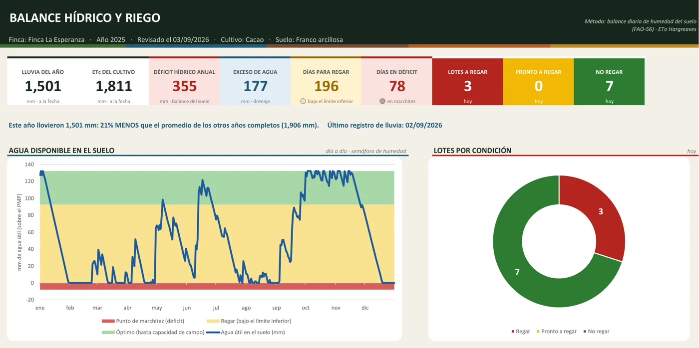
- Arriba: cuánto llovió en el año, cuánta agua le faltó al cultivo y cuántos días hubo que regar.
- La línea azul es el agua que tiene la tierra cada día. Si está en verde, todo bien; si baja al amarillo, toca regar; en rojo, el cultivo ya sufre.
- La rueda te dice cuántos lotes hay que regar hoy y cuántos no.
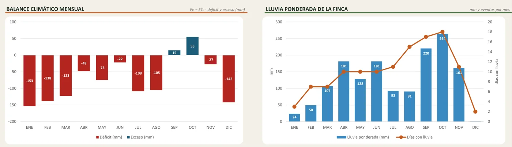
- Mes a mes: en rojo los meses en que llovió menos de lo que el cultivo gastó; en azul, los que sobró agua.
- La lluvia de la finca de cada mes y cuántos días llovió.
Funciona en 3 pasos
- Configura tu finca una sola vez. Tus pluviómetros, tus lotes, el cultivo y el tipo de tierra, eligiendo de listas.
- Anota la lluvia de cada día. Fecha, pluviómetro y milímetros. Un minuto al día.
- Mira el semáforo. El Excel calcula solo el agua del suelo y te dice qué lote regar 🔴, cuál pronto 🟡 y cuál no 🟢.
Con este Excel vas a poder
- Regar solo cuando hace falta y en el lote que más lo necesita, ahorrando agua, combustible y jornales.
- Ver día a día cuánta agua le queda al suelo y adelantarte al verano antes de que el cultivo sufra.
- Saber cada cuántos días y cuántas horas regar según tu suelo y tu cultivo.
- Unir la lluvia de hasta 12 pluviómetros en un promedio de toda la finca, ponderado por área.
- Conocer el déficit hídrico del año y compararlo con años anteriores.
- Entregar un informe profesional listo para imprimir o enviar en PDF.
Sirve para cualquier cultivo
Trae los valores de referencia de la FAO (método FAO-56) para 14 cultivos, y puedes agregar los tuyos.
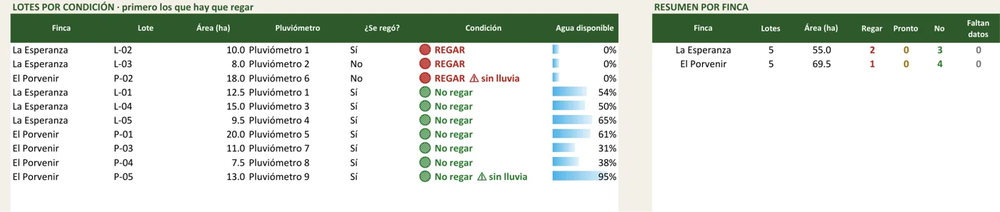
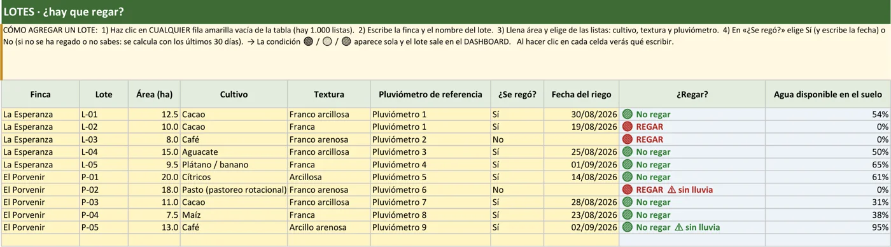
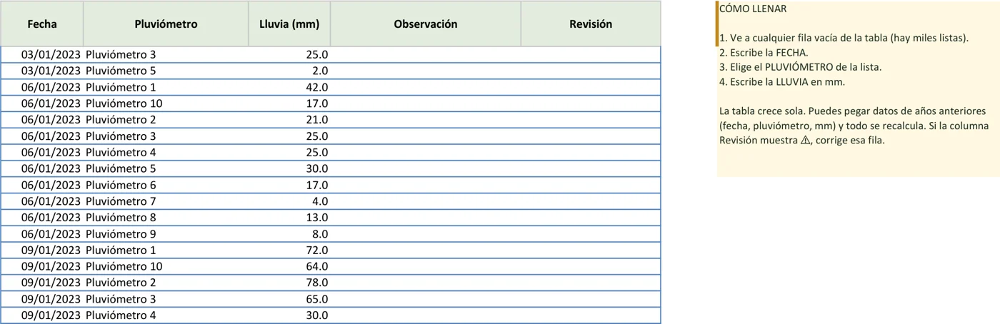
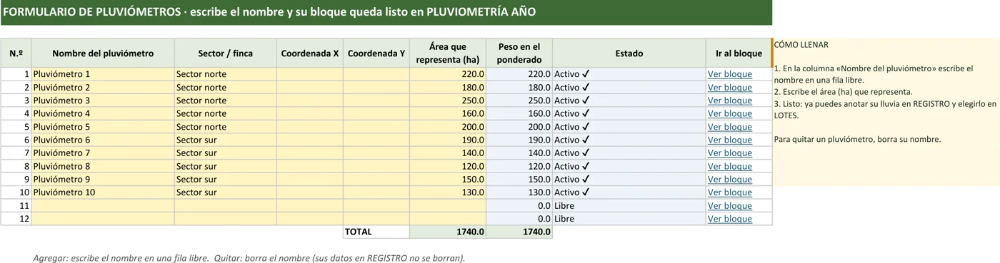
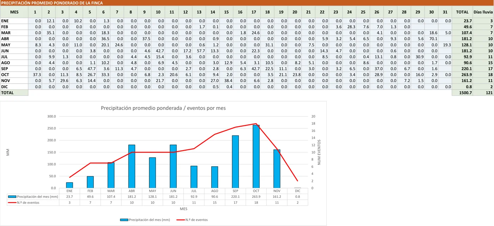
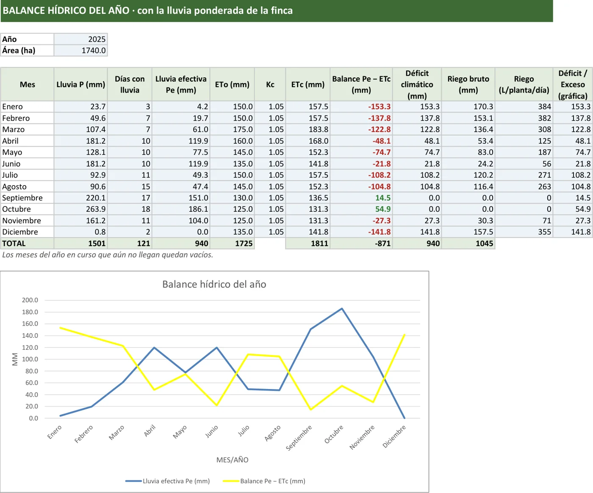
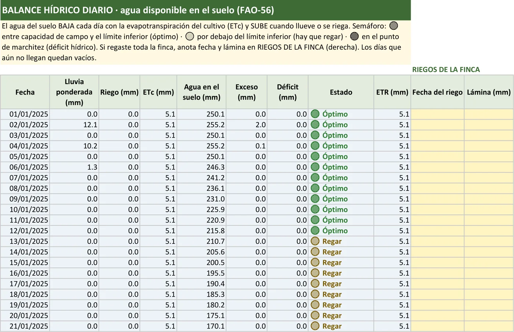
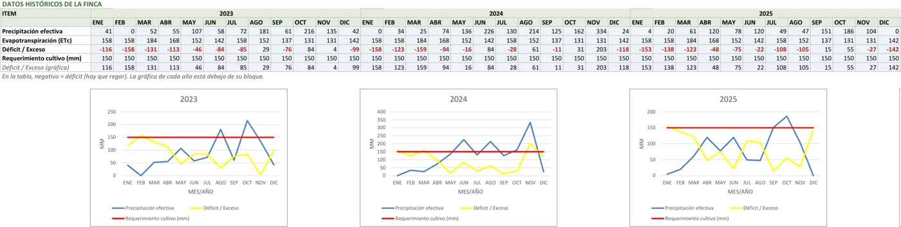
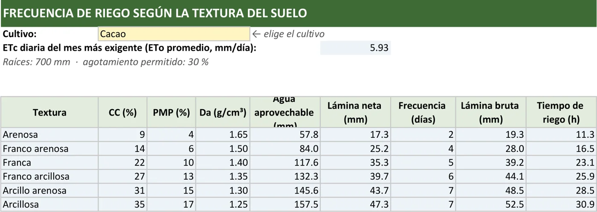
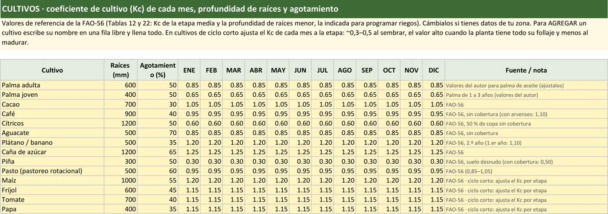
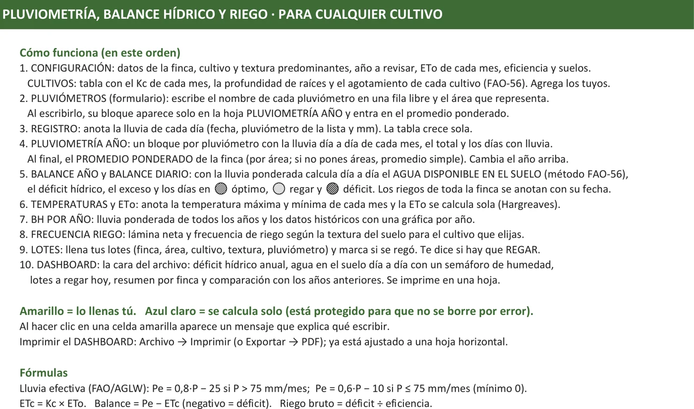
¿Es para ti?
No es para ti si no tienes cómo medir la lluvia (un pluviómetro cuesta menos de $30.000) o si no usas Microsoft Excel.
Todo lo que recibes hoy
- Excel de Balance Hídrico y Riego con dashboard
- Balance diario del suelo con semáforo de riego
- Hoja de lotes: qué regar hoy, hasta 1.000 lotes
- Pluviometría de hasta 12 pluviómetros con promedio ponderado
- Frecuencia y tiempo de riego por suelo y cultivo
- 14 cultivos con valores FAO-56 y espacio para los tuyos
- ETo calculada con tus temperaturas (Hargreaves)
- Guía de uso paso a paso dentro del archivo
Hoy
Pago único · sin mensualidades · tuyo para siempre
🔒 Pago seguro con Wompi · Te llega al correo en minutos
Preguntas frecuentes
¿Necesito saber mucho de Excel?
No. Solo escribes en las celdas amarillas y eliges de listas. Cada celda te explica qué escribir al hacer clic, y las fórmulas están protegidas para que no se dañen.
¿Sirve para mi cultivo?
Sí. Trae 14 cultivos con valores de la FAO (cacao, café, plátano, aguacate, cítricos, caña, pasto, piña, maíz, fríjol, tomate, papa y palma) y puedes agregar el tuyo escribiendo su coeficiente de cultivo.
¿Necesito una estación meteorológica?
No. Basta con un pluviómetro. Si además anotas la temperatura máxima y mínima, el cálculo es más preciso; si no, usa la evaporación promedio de tu zona.
¿Funciona en el celular o en Google Sheets?
Está hecho para Microsoft Excel 2013 o posterior en computador (Windows o Mac). En Google Sheets o LibreOffice no funciona bien.
¿Tiene macros?
No. No usa macros, así que abre sin avisos de seguridad.
¿Cómo lo recibo?
Apenas Wompi confirma el pago, te llega el archivo a tu correo en minutos. Si no lo ves, revisa spam o escríbenos.
Balance Hídrico y Riego en Excel
Detalle del pedido
- 1. Wompi te pide tu correo, nombre y celular, y eliges cómo pagar.
- 2. Pagas con tarjeta, PSE, Nequi o botón Bancolombia.
- 3. En minutos te llega el Excel a tu correo.
Al dar clic en "Pagar con Wompi" aceptas los términos y condiciones. El archivo es para uso personal del comprador.
© Adán A. Arias · cursos.adanarias.com
PrivacidadTu información está 100 % protegida
Compra seguraAmbiente seguro y autenticado
Método FAO-56Cálculos revisados y probados en varios escenarios